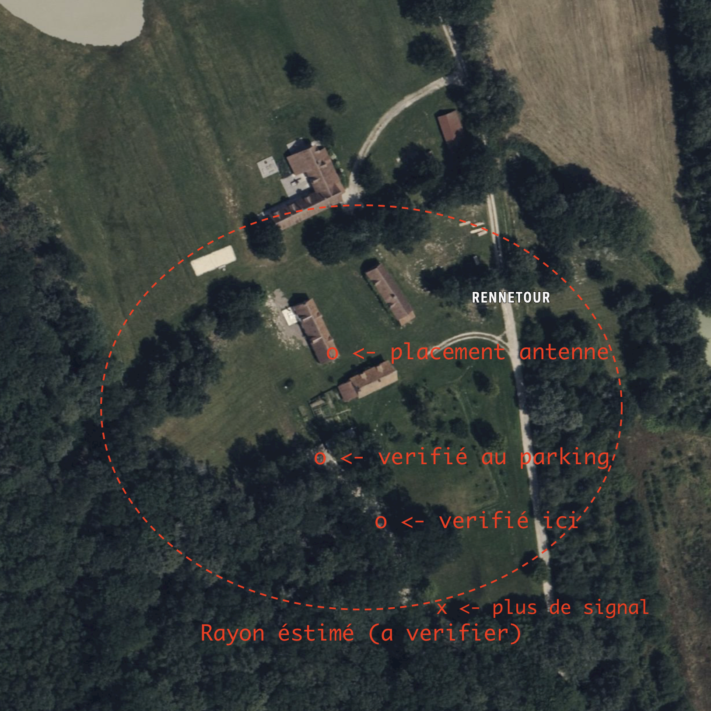

Documentation pour systeme alèrte de Marie-Françoise de Pitray
1. Objectif :
Pour permettre une autonomie confortable a Marie-Françoise, tout en gardant une sécurité contre des chutes ou des malaises qui pourraient entrainer de graves répercutions.
Pour avoir une solution "invisible", nous avions cherché un élément qui :
- Peut se porter constament, meme sous/dans l'eau (douche, cuisine, etc.),
- N'a pas besoin d'être recharger (les piles durent pendant 6 mois d'utilisation quotidienne)
- Détecte automatiquement les chutes, et peut déclencher une alarme tout seul (avec option d'annulation en cas d'activation accidentelle),
- Une portée suffisante pour couvrir jusqu'au parking derriere la maison.
2. Rayon éstimé d'éfficacité :

3. Le comportement du systeme :
- Marie-Françoise est la premiere a être appellée, ainsi elle peut :
- Confirmer que le systeme s'est mis en route (en entendant son téléphone sonner)
- Annuler l'appel en cas d'erreur.
- Si pas de réponse de sa part, l'alerte continue comme prévu.
- Le systeme déclenchera des appels en sequence , en essayant de joindre chaque membre avant de passer au suivant, meme si le membre ne répond pas.
- Le systeme répétera la liste en boucle jusqu'a trouver un membre qui accepte de prendre en charge la situation.
%% https://mermaid-js.github.io/mermaid/#/flowchart?id=flowchart-orientation
%% TODO: Try this as a stateDiagram?
flowchart TB
A --> B
end
4. Accepter d'intervenir
En appuyant sur "1" lors d'un appel, vous prenez en charge la situation. A partir de ce moment, il n'y aura plus d'actions automatiques, le système cessera d'appeller en sequence, etc.
Vous n'êtes pas obligé d'être sur place pour accepter - il suffit d'avoir la volonter de prendre en main la situation, et appeller d'autres et/ou les pompiers pour faire avancer les choses.
5. Ok, j'accepte. Quoi maintenant ?
Si vous êtes en mesure de vous déplacer a la ferme, c'est un moyen sur de verifier ce qu'il se passe. Sinon, vous pouvez commencer a appeller des autres qui serait susceptibles a pouvoir le faire.
A cet effet, vous recevrez un message d'accompagnement comme ceci, avec les informations pour contacter d'autres gens dans la région ou qui pourrait être concernées :
 - lien ->
- lien ->

En bas du SMS se figure un lien qui redirige vers notre site web, qui permet de signaler aux autres que la situation est réglée
7. Plus loin ?
D'autres fonctionalitées envisagées :
- Possibilité d'envoyer ces messages/ces appels via WhatsApp
- Possibilité de rajouter un lien vers un groupe WhatsApp pour faciliter la communication
- Possibilité de répondre/envoyer un SMS au numèro du systeme d'alerte pour redistribution a tout le monde.
- Rajouter un répondeur avec des informations/l'envoi du SMS automatique si rappel